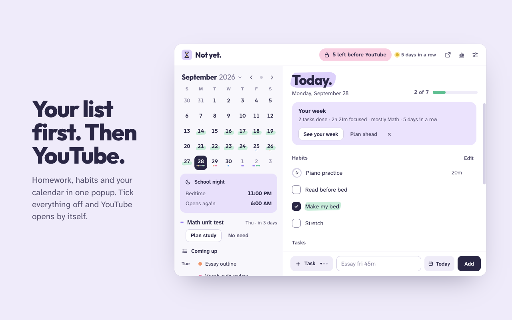

Tasks first. Videos later.
Not yet. is a planner for students that keeps YouTube and social media closed until today's homework and habits are done.
- A Chrome extension
- Made for students
- Everything stays in your browser

And a lot more
Help with the hard part: starting.
Not yet. doesn't just lock things. It helps you plan the week, get going on the task you keep putting off, and see how you're really doing.
Just 5 minutes
Start with a five-minute timer. When it ends, decide whether to keep going. Usually you will.
Steps, not mountains
Break a big task into steps, and your list shows only the next one.
Focus sounds
Brown noise, rain or waves while a timer runs, made right on your computer.
Your next test
A countdown to your next test, with short study sessions spread over the days before it.
Type it like you'd say it
"History essay tomorrow 45m" becomes a task on the right day, with its length and subject.
Streaks and a Sunday review
A quiet streak, lengths suggested from your own history, and a short look back each week.
Bedtime that sticks
Sites close at the bedtime you pick, later on weekends. You can't push tonight's bedtime back.
Your sites, your words
YouTube out of the box. Switch on TikTok, Instagram, Reddit and more, with your own lock-screen messages.
Todoist and Canvas
Their tasks show up in your list, and ticking one here ticks it there.
Private by design
Your list is yours.
No accounts of ours, no tracking, no servers. Read the privacy policy.
- Stays in your browser. Habits, tasks, notes and settings are saved in Chrome, on your computer.
- Google is optional. If you sign in, your calendars and tasks go only between your browser and Google.
- Nothing to the developer. Not your browsing, not your homework, not your stats.